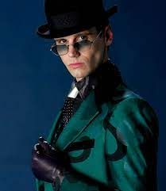

Welcome to Marcus's Dad Jokes
Just to advise you. I didn't actually get any of these jokes from my dad, but rather from the internet. My dad's humour is basically just in the bad jokes section.
Anyway lets start
What's the first think a dad says after New Years?
I remember last year like it was yesterday!You see, this is funny because since it just became 'New Years':
([new years] = the calendar year just begun or about to begin.)so in a sense, the dad would remember last year like it was yesterday, becuase it was yesterday

I'm afraid for the calendar...
Its days are numbered!You see, this joke is funny because of how he's talking about a 'calendar':
([cal·en·dar] = a chart or series of pages showing the days, weeks, and months of a particular year, or giving particular seasonal information.)And as we all know, a calendars days are in fact, numbered.

What do a tick and the Eiffel Tower have in common?
They're both Paris sites!You see, this joke is funny because of how they are doing a play on words with 'parasite':
([par·a·site] = an organism that lives in or on an organism of another species (its host) and benefits by deriving nutrients at the other's expense.)And while a tick is a parasite, the Eiffel Tower is a site in Paris

I thought the dryer was shrinking my clothes...
Turns out it was the refrigerator all along!You see, this joke is funny because the guy is getting fat

What do you call a fish wearing a bowtie?
Sofishticated!You see, this joke is funny because of how they are doing a play on words with 'sophisticated':
([so·phis·ti·cat·ed] = having, revealing, or proceeding from a great deal of worldly experience and knowledge of fashion and culture.)While a person who dresses with class is called sophisticated, a fish is Sofishticated because they're a fish and sophisticated at the same time.

My wife said I should do lunges to stay in shape...
That would be a big step forward!You see, this joke is funny because of how his answer towards 'lunges':
([lunge] = an exercise or gymnastic movement resembling the lunge of a fencer.)While it would be a big step forward for him to start exercising, a lunge is also described as a BIG STEP FORWARD!

RIDDLE TIME!!!!!!
